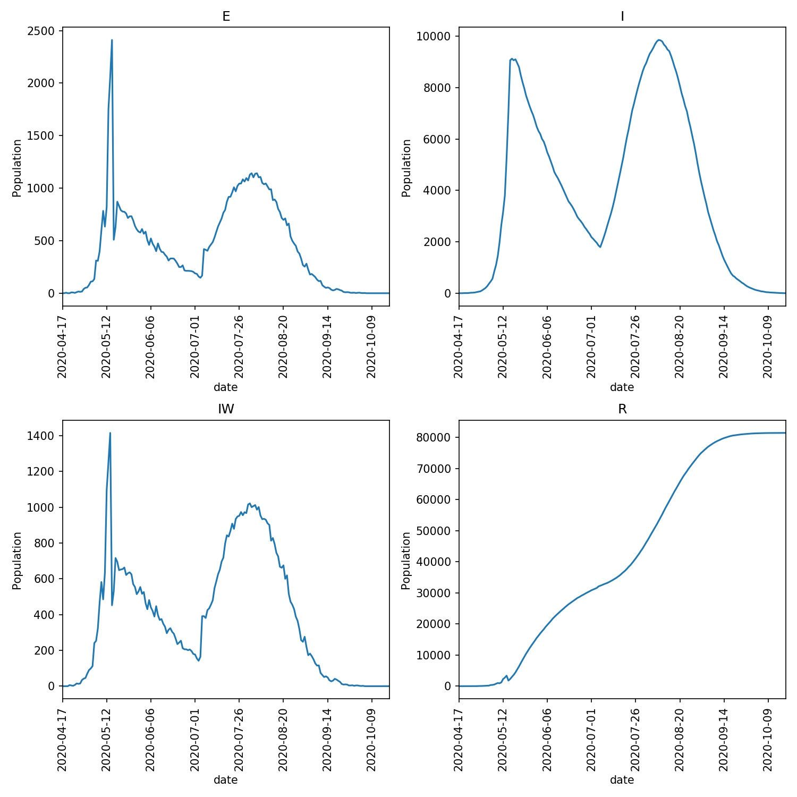

Responding to changing conditions¶
We’ve now created a lock-down advance function, but are currently triggering this function in an iterator based on a fixed number of days since the outbreak started.
A better approach would be to trigger the lock-down based on the number of individuals who are detected as infected in the model.
To do this, edit your lockdown.py script and copy in the following;
from metawards.iterators import iterate_working_week, \
advance_infprob, \
advance_fixed, \
advance_play
from metawards.utils import Console
def advance_lockdown(**kwargs):
Console.debug("We are on lockdown")
advance_infprob(scale_rate=0.25, **kwargs)
advance_play(**kwargs)
def iterate_lockdown(population, **kwargs):
if not hasattr(population, "lockdown_state"):
population.lockdown_state = "before"
population.is_locked_down = False
if population.lockdown_state == "before":
if population.total > 5000:
population.lockdown_state = "lockdown"
population.lockdown_started = population.day
population.is_locked_down = True
if population.is_locked_down:
return [advance_lockdown]
else:
return iterate_working_week(population=population,
**kwargs)
The first thing we do here is see if the population has a
lockdown_state variable using the standard Python
hasattr function.
This variable won’t exist on the first call to
to iterate_lockdown, and so here we
set the lockdown_state to before
and set the flag population.is_locked_down to False.
Next, we check if the lockdown is in the before state. If it is,
then if the total infected population is greater than 5000 we change
the lockdown_state to lockdown, save the day the lockdown
started to population.lockdown_started, and set the flag
population.is_locked_down to True.
Finally, we either return our advance_lockdown advance function,
or the standard advance functions for a working week depending
on the value of the population.is_locked_down flag.
Run the model and draw the overview graph using;
metawards -d lurgy3 --additional ExtraSeedsLondon.dat --iterator lockdown
metawards-plot -i output/results.csv.bz2 --format jpg --dpi 150
You should now see that the lockdown takes effect some time after the infected population grows above 5000. This tips the curve and reduces the spread of the disease. You can see what my graphs looked like here;

Releasing lockdown¶
We can use the data in population to decide when to release the
lockdown as well. For example, we could release when the size of the
infected population drops below 2000. To do this, edit your lockdown.py
file to read;
from metawards.iterators import iterate_working_week, \
advance_infprob, \
advance_fixed, \
advance_play
from metawards.utils import Console
def advance_lockdown(**kwargs):
Console.debug("We are on lockdown")
advance_infprob(scale_rate=0.25, **kwargs)
advance_play(**kwargs)
def iterate_lockdown(population, **kwargs):
if not hasattr(population, "lockdown_state"):
population.lockdown_state = "before"
population.is_locked_down = False
if population.lockdown_state == "before":
if population.total > 5000:
population.lockdown_state = "lockdown"
population.lockdown_started = population.day
population.is_locked_down = True
elif population.lockdown_state == "lockdown":
if population.total < 2000:
population.lockdown_state = "after"
population.lockdown_ended = population.day
population.is_locked_down = False
if population.is_locked_down:
return [advance_lockdown]
else:
return iterate_working_week(population=population,
**kwargs)
Run the model as before and see what happens…
To start, the lockdown has worked and the number of infections has fallen, with the number falling below 2000 on day 78. However, releasing the lockdown completely leads to a rapid growth in the infection, with over 85,000 infected three weeks after lockdown ended. This is unsurprising, as there was still a lot of infected individuals remaining once lockdown ended, and a large population that was still susceptible to infection (as you can see from the print of my run and the overview graph below).
━━━━━━━━━━━━━━━━━━━━━━━━━━━━━━━━━━━━━━━━━ Day 76 ━━━━━━━━━━━━━━━━━━━━━━━━━━━━━━━━━━━━━━━━━
We are on lockdown lockdown.py:9
S: 56055907 E: 201 I: 2192 R: 23777 IW: 215 POPULATION: 56082077
Number of infections: 2393
━━━━━━━━━━━━━━━━━━━━━━━━━━━━━━━━━━━━━━━━━ Day 77 ━━━━━━━━━━━━━━━━━━━━━━━━━━━━━━━━━━━━━━━━━
We are on lockdown lockdown.py:9
S: 56055697 E: 223 I: 2144 R: 24013 IW: 202 POPULATION: 56082077
Number of infections: 2367
━━━━━━━━━━━━━━━━━━━━━━━━━━━━━━━━━━━━━━━━━ Day 78 ━━━━━━━━━━━━━━━━━━━━━━━━━━━━━━━━━━━━━━━━━
We are on lockdown lockdown.py:9
S: 56055515 E: 210 I: 2109 R: 24243 IW: 174 POPULATION: 56082077
Number of infections: 2319
━━━━━━━━━━━━━━━━━━━━━━━━━━━━━━━━━━━━━━━━━ Day 79 ━━━━━━━━━━━━━━━━━━━━━━━━━━━━━━━━━━━━━━━━━
[15:41:25] We are on lockdown lockdown.py:9
S: 56055304 E: 182 I: 2099 R: 24492 IW: 205 POPULATION: 56082077
Number of infections: 2281
━━━━━━━━━━━━━━━━━━━━━━━━━━━━━━━━━━━━━━━━━ Day 80 ━━━━━━━━━━━━━━━━━━━━━━━━━━━━━━━━━━━━━━━━━
We are on lockdown lockdown.py:9
S: 56055121 E: 211 I: 2055 R: 24690 IW: 175 POPULATION: 56082077
Number of infections: 2266
━━━━━━━━━━━━━━━━━━━━━━━━━━━━━━━━━━━━━━━━━ Day 81 ━━━━━━━━━━━━━━━━━━━━━━━━━━━━━━━━━━━━━━━━━
We are on lockdown lockdown.py:9
S: 56054939 E: 183 I: 2004 R: 24951 IW: 176 POPULATION: 56082077
Number of infections: 2187
━━━━━━━━━━━━━━━━━━━━━━━━━━━━━━━━━━━━━━━━━ Day 82 ━━━━━━━━━━━━━━━━━━━━━━━━━━━━━━━━━━━━━━━━━
We are on lockdown lockdown.py:9
S: 56054770 E: 182 I: 1964 R: 25161 IW: 166 POPULATION: 56082077
Number of infections: 2146
━━━━━━━━━━━━━━━━━━━━━━━━━━━━━━━━━━━━━━━━━ Day 83 ━━━━━━━━━━━━━━━━━━━━━━━━━━━━━━━━━━━━━━━━━
S: 56053695 E: 169 I: 1923 R: 26290 IW: 916 POPULATION: 56082077
Number of infections: 2092
━━━━━━━━━━━━━━━━━━━━━━━━━━━━━━━━━━━━━━━━━ Day 84 ━━━━━━━━━━━━━━━━━━━━━━━━━━━━━━━━━━━━━━━━━
S: 56052615 E: 1075 I: 1879 R: 26508 IW: 920 POPULATION: 56082077
Number of infections: 2954
━━━━━━━━━━━━━━━━━━━━━━━━━━━━━━━━━━━━━━━━━ Day 85 ━━━━━━━━━━━━━━━━━━━━━━━━━━━━━━━━━━━━━━━━━
S: 56051552 E: 1080 I: 2730 R: 26715 IW: 908 POPULATION: 56082077
Number of infections: 3810
━━━━━━━━━━━━━━━━━━━━━━━━━━━━━━━━━━━━━━━━━ Day 86 ━━━━━━━━━━━━━━━━━━━━━━━━━━━━━━━━━━━━━━━━━
S: 56050161 E: 1063 I: 3598 R: 27255 IW: 1187 POPULATION: 56082077
Number of infections: 4661
━━━━━━━━━━━━━━━━━━━━━━━━━━━━━━━━━━━━━━━━━ Day 87 ━━━━━━━━━━━━━━━━━━━━━━━━━━━━━━━━━━━━━━━━━
S: 56049050 E: 1391 I: 4452 R: 27184 IW: 966 POPULATION: 56082077
Number of infections: 5843
━━━━━━━━━━━━━━━━━━━━━━━━━━━━━━━━━━━━━━━━━ Day 88 ━━━━━━━━━━━━━━━━━━━━━━━━━━━━━━━━━━━━━━━━━
S: 56047600 E: 1111 I: 5589 R: 27777 IW: 1236 POPULATION: 56082077
Number of infections: 6700
━━━━━━━━━━━━━━━━━━━━━━━━━━━━━━━━━━━━━━━━━ Day 89 ━━━━━━━━━━━━━━━━━━━━━━━━━━━━━━━━━━━━━━━━━
S: 56044865 E: 1450 I: 6352 R: 29410 IW: 2072 POPULATION: 56082077
Number of infections: 7802
━━━━━━━━━━━━━━━━━━━━━━━━━━━━━━━━━━━━━━━━━ Day 90 ━━━━━━━━━━━━━━━━━━━━━━━━━━━━━━━━━━━━━━━━━
S: 56041834 E: 2735 I: 7386 R: 30122 IW: 2246 POPULATION: 56082077
Number of infections: 10121

Note how the second wave of infection makes the initial wave almost invisible in this graph. The only visible evidence is the small peak in the number of infected wards (IW) plot.
Relaxing, not removing lockdown¶
The problem is that we treated lockdown like a binary switch, and immediately went back to normal once it was lifted.
Instead, we need to release the lockdown in stages. To model this,
edit your lockdown.py to contain the following.
from metawards.iterators import iterate_working_week, \
advance_infprob, \
advance_fixed, \
advance_play
from metawards.utils import Console
def advance_lockdown(population, **kwargs):
Console.debug("We are in lockdown",
variables=[population.lockdown_scale_rate])
advance_infprob(population=population,
scale_rate=population.lockdown_scale_rate,
**kwargs)
advance_play(population=population, **kwargs)
def iterate_lockdown(population, **kwargs):
try:
population.lockdown_state
except Exception:
population.lockdown_state = "before"
population.is_locked_down = False
population.lockdown_scale_rate = 0.05
if population.lockdown_state == "before":
if population.total > 5000:
population.lockdown_state = "lockdown"
population.lockdown_started = population.day
population.is_locked_down = True
elif population.lockdown_state == "lockdown":
if population.total < 2000:
population.lockdown_state = "relaxed_lockdown"
population.lockdown_ended = population.day
population.lockdown_scale_rate = 0.10
population.is_locked_down = True
elif population.lockdown_state == "relaxed_lockdown":
if population.total < 1000:
population.lockdown_scale_rate = 0.20
else:
population.lockdown_scale_rate = 0.10
if population.is_locked_down:
return [advance_lockdown]
else:
return iterate_working_week(population=population,
**kwargs)
In this code we have created a new lockdown state that we’ve called
relaxed_lockdown. This is entered when the number of infections
drops below 2000. In this state controls can be released that
correspond to now only halving the infection rate (scale_rate
is increased to 0.10 from 0.05 during the strong lockdown).
In the relaxed_lockdown state the infected population
is always checked. If it is below 1000 then the lockdown can be
relaxed even more, with the scale_rate increasing from 0.10
to 0.20. However, if the infected population rises above 1000,
then the lockdown is tightened and the scale_rate is lowered
again to 0.10.
Have a go at running using this iterator. What do you see? In my
case I see the model moving from lockdown (scale_factor==0.05),
through relaxed lockdown (scale_factor==0.1) to light
lockdown (scale_factor==0.2) during the outbreak, which
is brought under control. The overview plots are here;
There is a small second peak as the lockdown is relaxed, but this seems to be under control.
Warning
Remember, we cannot read too much into single model runs as these are very stochastic simulations. We would need to run models many times and average before we could gain real insight.
Returning to work¶
Because Python is dynamically typed, we can set whatever flags
or add whatever data we want to the population object that
we need (or indeed to any Python object).
Let’s now add an extra flag that will be used by
advance_lockdown to call advance_fixed if the lockdown
has been lifted sufficiently for people to return to work.
Copy the below into your lockdown.py file;
from metawards.iterators import iterate_working_week, \
advance_infprob, \
advance_fixed, \
advance_play
from metawards.utils import Console
def advance_lockdown(population, **kwargs):
Console.debug("We are in lockdown",
variables=[population.lockdown_scale_rate,
population.is_work_locked_down])
advance_infprob(population=population,
scale_rate=population.lockdown_scale_rate,
**kwargs)
advance_play(population=population, **kwargs)
if not population.is_work_locked_down:
advance_fixed(population=population, **kwargs)
def iterate_lockdown(population, **kwargs):
if not hasattr(population, "lockdown_state"):
population.lockdown_state = "before"
population.is_locked_down = False
population.lockdown_scale_rate = 0.25
population.is_work_locked_down = False
if population.lockdown_state == "before":
if population.total > 5000:
population.lockdown_state = "lockdown"
population.lockdown_started = population.day
population.is_locked_down = True
population.is_work_locked_down = True
elif population.lockdown_state == "lockdown":
if population.total < 2000:
population.lockdown_state = "relaxed_lockdown"
population.lockdown_ended = population.day
population.lockdown_scale_rate = 0.5
population.is_locked_down = True
population.is_work_locked_down = False
elif population.lockdown_state == "relaxed_lockdown":
population.is_work_locked_down = False
if population.total < 1000:
population.lockdown_scale_rate = 0.75
else:
population.lockdown_scale_rate = 0.5
if population.is_locked_down:
return [advance_lockdown]
else:
return iterate_working_week(population=population,
**kwargs)
This is getting longer, but I hope you can see that all we have
added is a population.is_work_locked_down flag, plus some
extra code to flip this between True and False. This flag
is read by advance_lockdown, which calls advance_fixed
if the flag is False. We’ve also added a check to see if the
infected population rises above 5000 while in “relaxed lockdown”,
and if it does, to re-enter full lockdown.
Run the model and plot the graphs. What do you see? Do you get a graph similar to below?
